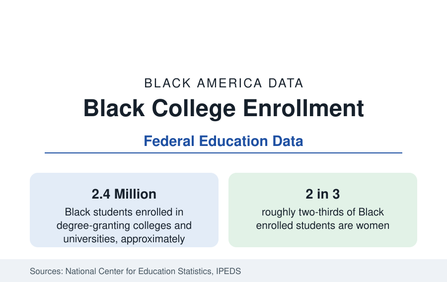

Black Education
Black College Enrollment: 2.4 Million Students
About 2.4 million Black students are enrolled in American colleges — nearly two-thirds of them women. The NCES enrollment data by sector, level, and trend.

About 2.4 million Black students are enrolled in the nation's degree-granting colleges and universities in the National Center for Education Statistics' fall enrollment counts — roughly 13 percent of all enrolled students, close to the Black share of the college-age population. Enrollment is the flow variable of higher education: it is where access is measured, before the attainment statistics of this section record who finishes. This article reports the enrollment data by level and sector, the striking gender composition of the Black student body, and the trend across the boom, decline, and partial recovery of the past two decades.
Undergraduate and Graduate Enrollment
The large majority of Black enrolled students — about four in five — are undergraduates, and they are distributed across the sector's levels in a pattern that matters for completion: a large share, roughly two in five Black undergraduates, attend community colleges, the open-access two-year sector from which transfer to a bachelor's program is the critical and leakiest joint in the pipeline. Graduate and professional enrollment accounts for the remaining fifth — several hundred thousand students, concentrated in master's programs in education, business, social work, and health fields, with smaller but consequential populations in law, medicine, and doctoral research, the pipelines profiled in this section's professional-education coverage.
The Sector Map
Black students attend every kind of American college, in proportions that differ from the national map in two important ways. Public institutions enroll the large majority, as they do for all students. But Black students are substantially overrepresented in the for-profit sector: at its peak, more than one in four students at for-profit colleges was Black, though Black students were about one in eight college students overall — an overrepresentation that the sector's subsequent contraction and closure waves converted into a disproportionate share of stranded credits and student debt, the subject of this section's debt article. At the other pole, Black students are underrepresented at the most selective private institutions relative to their population share, a distribution the admissions data quantify and that shifted measurably with the end of race-conscious admissions in the courts' recent rulings — a change whose first enrollment effects the newest survey cycles are now recording.
Two in Three Are Women
The most distinctive fact of Black enrollment is its gender composition: roughly two-thirds of Black enrolled students are women, the most female-skewed enrollment of any major group in the federal data. The imbalance is present at every level — undergraduate, master's, professional, and doctoral — and it widens at the graduate levels. Its origins lie upstream, in the K-12 data on suspension, tracking, and high school completion, and its consequences run downstream into the attainment, earnings, and professional statistics throughout this reference, where Black women's credentials consistently outnumber Black men's. Explaining and addressing the male enrollment shortfall is, on the data, one of the central problems of Black education — and the subject of dedicated coverage in this section.
The Trend: Boom, Slide, Stabilization
Black enrollment rose strongly through the 2000s, peaked early in the 2010s at roughly three million students, and then declined for most of the decade — a slide driven by the for-profit sector's collapse, a strong labor market pulling students into work, and falling enrollment at community colleges nationally. The pandemic accelerated the decline before the numbers stabilized in the most recent counts at about 2.4 million. Because attainment follows enrollment with a lag, the enrollment slide of the 2010s is the leading indicator behind the flattening of young-adult attainment gains in this section's attainment article — the pipeline arithmetic by which today's enrollment becomes the next decade's degree stock.
Reading Enrollment Honestly
Enrollment is the most misread of the education statistics, and two cautions govern its use here. First, enrollment counts access, not progress: a student enrolled is not a student advancing, and the completion data — six-year graduation rates for Black students run near 40 to 45 percent at four-year institutions — must always accompany the access figures. Second, the headcount mixes full-time eighteen-year-olds with part-time adult learners; Black enrollment skews older and more part-time than the national profile, which is part of why its completion arithmetic differs. With those cautions, the figure stands as the measure of the system's front door: 2.4 million students, two-thirds of them women, spread across every sector of American higher education.
The enrollment data, summarized: a Black student body of about 2.4 million — near its population share at the door, distinctive in its gender balance, its community-college and for-profit weight, and its post-2010 contraction — whose progress through the system the rest of this section measures.
More in Black Education
Black Educational Attainment: High School Parity, the College Gap
About 89 percent of Black adults hold a high school diploma and one in four holds a bachelor's degree or higher — the attainment ladder, the college completion gap, and the generational trend.
Historically Black Colleges and Universities: Enrollment and Degrees
More than 100 HBCUs enroll roughly 290,000 students and award about one in six Black bachelor's degrees — an outsized share from a small sector. The federal education data.
Black Student Loan Debt: Borrowing More, Owing Longer
More than four in five Black bachelor's graduates borrow — and four years out they owe about $25,000 more than White graduates. The debt data behind the attainment numbers.
Source: National Center for Education Statistics, Integrated Postsecondary Education Data System (IPEDS), Fall Enrollment component.